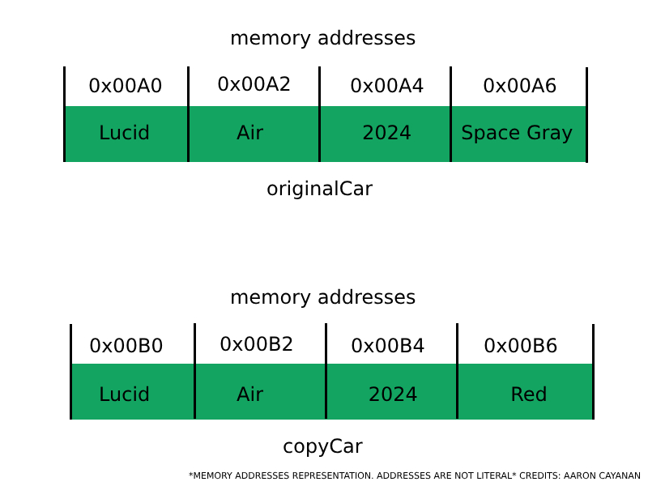
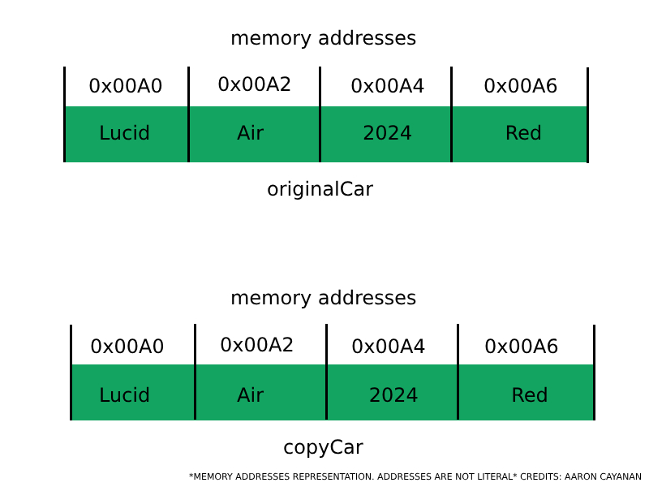

When working with objects in Java, it is important to understand the difference between shallow and deep copies.
Before we get into the differences, we need to understand what an object is. In Java, an object is an instance
of a class and
is essential for use of attributes and methods of the class.
Consider the following example:
// Define a class named Car
public class Car {
// Attributes
String make;
String model;
int year;
String color;
// Constructor
public Car(String make, String model, int year, String color) {
this.make = make;
this.model = model;
this.year = year;
this.color = color;
}
// Method to drive the car
public void drive() {
System.out.println("Vroom vroom!");
}
}
In this example, we created a class named Car with instance variables 'brand', 'model', and 'year'. The class
has a constructor 'Car()' to initalize the instance variables when an object is created. We also created a
method
'drive()' that prints "Vroom vroom!" to the console when called.
Using this example, an object created with this class will consist of:
| Identity | State/Attributes | Behavior |
|---|---|---|
| Name of Car | Make Model Year Color |
Drive |
Essentially, objects serve as the connection between classes. A class functions as a blueprint outlining the program's behavior and structure during execution. It incorporates all the instances and methods that may be utilized within the program. On the other hand, objects encapsulate data utilized for interaction with other objects.
Now that we understand objects and classes, why should we even bother with copies?
There are many reasons as to why we may need to utilize copies in Java and object-oriented programming.
Some reasons include:
A shallow copy is a bit misleading. It is not a copy at all, but rather a reference to the original object.
When a shallow copy is made, the new object will point to the same memory location as the original object.
This means that any changes made to the new object will also affect the original object.
Consider the following example:
// Create a new object
Car originalCar = new Car("Lucid", "Air", 2024, "Space Gray");
// Create a shallow copy of the object
Car copyCar = originalCar;
When we create a shallow copy of 'originalCar', 'copyCar' will point to the same memory location as 'originalCar'. This means that any changes made to 'copyCar' will also affect 'originalCar'. This is useful when we want to create a new object with the same attributes as another object, but we need to be careful when making changes to the new object.
Let's see it in action. The following code will be the getter and setter methods for the color of the Car class.
// Getter method for the color attribute
public String getColor() {
return color;
}
// Setter method for the color attribute
public void setColor(String color) {
this.color = color;
}
Now, in our main method, let's change the color of the 'copyCar' object. After, we'll check the color of both car classes, and print them to the terminal.
// Change the color of the copyCar object
copyCar.setColor("Red");
// Print the color of both car objects
System.out.println("Original Car Color: " + originalCar.getColor());
System.out.println("Copy Car Color: " + copyCar.getColor());
The terminal will print:
Original Car Color: Red
Copy Car Color: Red
As we can see, the color of both car objects changed to red. This is because 'copyCar' is a shallow copy of 'originalCar', and any changes made to 'copyCar' will also affect 'originalCar'.
A deep copy is a true copy of the original object. When a deep copy is made, a new object is created with the same attributes as the original object, but with a different memory location. This means that any changes made to the new object will not affect the original object.
Consider the following example:
// Create a new object
Car originalCar = new Car("Lucid", "Air", 2024, "Space Gray");
// Create a deep copy of the object
Car copyCar = new Car(originalCar.getMake(), originalCar.getModel(), originalCar.getYear(), originalCar.getColor());
When we create a deep copy of 'originalCar', 'copyCar' will be a new object with the same attributes as 'originalCar', but with a different memory location. This means that any changes made to 'copyCar' will not affect 'originalCar'.
Let's see it in action. The following code will be the getter and setter methods for the color of the Car class.
// Getter method for the color attribute
public String getColor() {
return color;
}
// Setter method for the color attribute
public void setColor(String color) {
this.color = color;
}
Now, in our main method, let's change the color of the 'copyCar' object. After, we'll check the color of both car classes, and print them to the terminal.
// Change the color of the copyCar object
copyCar.setColor("Red");
// Print the color of both car objects
System.out.println("Original Car Color: " + originalCar.getColor());
System.out.println("Copy Car Color: " + copyCar.getColor());
The terminal will print:
Original Car Color: Space Gray
Copy Car Color: Red
As we can see, the color of 'copyCar' changed to red, but the color of 'originalCar' remained the same. This is because 'copyCar' is a deep copy of 'originalCar', and any changes or maniplation to 'copyCar' will remain independent as it is its own object in a separate memory location.
As mentioned earlier, shallow copies are references to the same memory location to the original object, and deep copies allocate a new object with the same attributes at a different memory location. This is done by using the 'new' keyword. Using the 'new' keyword allocates memory for a new object.
Below is an example of a diagram on how object attributes are deep copied over using the 'new' keyword. In this example, the 'copyCar.setColor("Red")' method was called. as you can see, the memory address for color is different for each object. This allows for separate colors to be held at different memory locations as each object is now a separate instance of a class.
Now let's take a look at how memory allocation differs for shallow copies. Below is an example on how object attributes are referenced to the original object using a shallow copy. In this example, the 'copyCar.setColor("Red") method has also been called. Notice how the memory addresses are the same. This is because shallow copies are references to the original object, in this case 'originalCar'. This is why the color attribute has been set to red for both car objects.
Shallow and deep copies are important concepts to understand when working with objects in Java. Shallow copies are references to the original object, while deep copies are true copies of the original object. When making changes to a shallow copy, the original object will also be affected, while changes to a deep copy will not affect the original object.
It is important to know when to use shallow and deep copies in your programs. Shallow copies are useful when you want to create a new object with the same attributes as another object, but you need to be careful when making changes to the new object. Deep copies are useful when you want to create a new object with the same attributes as another object, but you want to make changes to the new object without affecting the original object.
In conclusion, understanding the differences between shallow and deep copies will help you create more efficient and effective programs in Java.
Watch this video for a visual explanation!